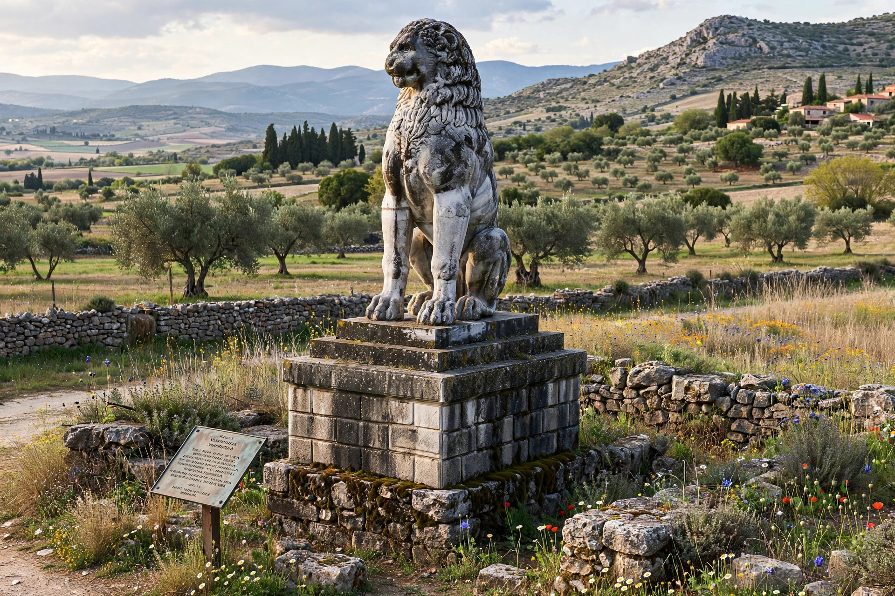

The Battle of Chaeronea was fought in early August 338 BC, near the city of Chaeronea in Boeotia, between the forces of Philip II of Macedon and an alliance of Greek city-states led by Athens and Thebes. Philip's victory established Macedonian supremacy over Greece; the eighteen-year-old Alexander — the future Alexander the Great — commanded the Macedonian left wing and won his first major battle honour.
| Battle of Chaeronea | |
|---|---|
 The Lion of Chaeronea | |
| Date | 2 August 338 BC |
| Location | Chaeronea, Boeotia, Greece |
| Result | Macedonian victory |
| Commanders | Philip II and Alexander; Chares and Theagenes for the allies |
For decades Philip II had expanded Macedonian power while Athens, urged on by the orator Demosthenes, tried to build a coalition against him. When Philip seized Elatea in 339 BC, Athens and its old enemy Thebes finally allied. The two armies met on the plain of Chaeronea. Philip fielded more than 30,000 infantry and 2,000 cavalry; the Greeks a comparable force.
Diodorus Siculus reports a hard-fought struggle. Philip's veteran phalanx on the right executed a controlled fighting retreat that drew the Athenians forward and broke the allied line's cohesion; Alexander, leading the Companion cavalry on the left, smashed into the Theban wing. The Sacred Band of Thebes — an elite unit of 300 — refused to retreat and was annihilated where it stood; later tradition says Alexander was first to break their ranks. Greek losses ran to several thousand, with many Athenians captured.
Philip treated Athens leniently but garrisoned Thebes. In the winter he convened the Greek states at Corinth, forming the League of Corinth under Macedonian hegemony and declaring war on Persia — the campaign Alexander would inherit in 336 BC. The Lion of Chaeronea monument marks the polyandrion (mass grave) of the Sacred Band, excavated in the nineteenth century with 254 skeletons in ordered rows.
Philip II of Macedon · Alexander the Great · Demosthenes · Sacred Band of Thebes